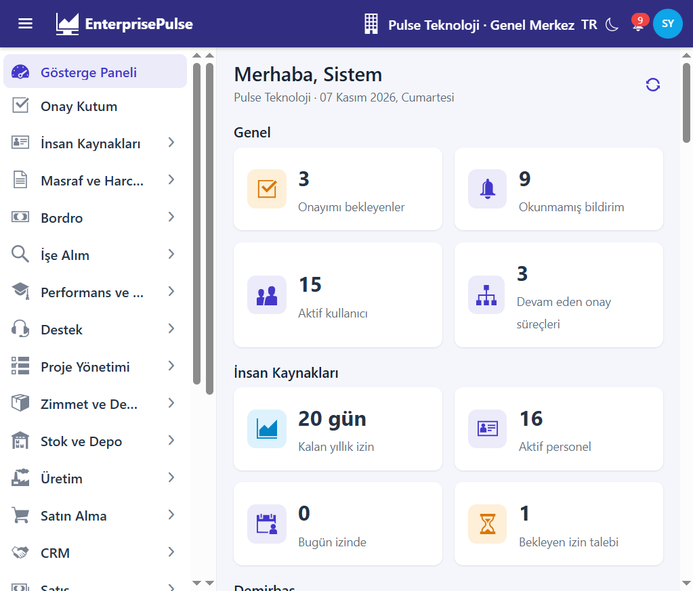

Satış / demo kılavuzu · Yazdır: Ctrl+P → PDF olarak kaydet
Spring Boot 3.5 · Vaadin 24 · Satış / demo dokümanı
EnterprisePulse.Java — Teknik Kılavuz
Modül gruplarına göre ekran kılavuzu. Yetkiye göre menü öğeleri görünür; demo veri Pulse Teknoloji üzerindedir.
TR / ENCtrl+P → PDFEnterprisePulse.Java

Gösterge paneliGiriş ekranı
Bu belge, NestJS / React orijinalinin Java 17 + Spring Boot 3.5 + Vaadin 24 yeniden yazımı olan EnterprisePulse.Java deposunun geliştirici kılavuzudur. Aynı domain modeli üç stack’te yaşar: orijinal NestJS (port 3000 / 5173), ASP.NET Core (port 5100 / 5101) ve bu repo (port 8180 / 8181). Buradaki metin Java paketlerine, gerçek dosya yollarına ve çalışan iş kurallarına göredir.
Kod üretilmiş JPA varlıklarını elle değiştirmeyin. Davranış servislerde, ResourceHook uygulamalarında ve Vaadin görünümlerindedir. Şema kaynağı tools/codegen/source/schema/*.prisma dosyalarıdır.
0. Bu belge hakkında
0.1 Kime yönelik
Hedef kitle, API’ye uç nokta ekleyen, bir domain servisini değiştiren, metadata ekranına aksiyon bağlayan veya seed / migration üreten geliştiricilerdir. Son kullanıcı menü turu README.md içindedir. Bu kılavuz istek yaşam döngüsünü, kiracı filtresini, numara serisini, onay dinleyicisini ve her paketin hangi dosyada durduğunu anlatır.
0.2 Belgenin kapsadığı ağaç
| Yol | Rol | | --- | --- | | pom.xml | Parent POM. enterprise-pulse 1.0.0, packaging=pom, modüller api ve web. | | api/ | Spring Boot API. Artifact enterprise-pulse-api. | | web/ | Vaadin 24 arayüz. Artifact enterprise-pulse-web. API’ye HTTP ile konuşur; JPA yoktur. | | tools/codegen/ | Prisma şemasından JPA varlıkları ve metadata.json. | | docker-compose.yml | Postgres, RustFS, Mailpit. | | api/src/main/resources/db/migration/ | Flyway V1__init.sql, V2__platform_support.sql. | | api/src/main/resources/metadata.json | Kaynak, menü, izin, rol, numara serisi. | | api/src/test/java/dev/enterprisepulse/ | HTTP ve birim testleri. | | docs/screenshots/ | README ekran görüntüleri. |
0.3 Nasıl okunur
Bölüm 1–2 ortamı ve paket haritasını verir.
Bölüm 3 her domainin dayandığı kalıpları verir: CurrentUser.actAs, kiracı filtresi, metadata CRUD, JWT, workflow, audit, numaralama, zamanlanmış iş.
Bölüm 4’ten itibaren her domain paketi entity, servis, controller, Vaadin view, seed ve iş kuralı olarak ayrılır.
Son bölüm test, seed sırası, mvnw komutları ve codegen’dir.
Yollar depo köküne göredir. Paket kökü API için dev.enterprisepulse, web için dev.enterprisepulse.web şeklindedir. Üretilmiş sınıflar dev.enterprisepulse.data.generated altındadır (233 Java dosyası).
0.4 Demo gerçekliği
Seed her API açılışında idempotent çalışır (app.seed-on-startup, varsayılan true). Operasyonel kayıtlar Pulse Teknoloji (PULSE) şirketindedir. Pulse Lojistik (PULSE-LOJ) yalnızca şirket, şube, vergi, birim, numara serisi, rol ve onay tanımı alır. Üst çubuktan Lojistik seçilince listelerin boş görünmesi bir hatadır denmez.
| Rol | E-posta | Şifre | Kişi | | --- | --- | --- | --- | | Sistem yöneticisi (isSuperAdmin) | admin@enterprisepulse.dev | Admin123! | Sistem Yöneticisi | | Müdür | manager@enterprisepulse.dev | Manager123! | Deniz Aksoy | | Personel | employee@enterprisepulse.dev | Employee123! | Kerem Polat |
On iki örnek personelin şifresi Employee123! ve adresi ad.soyad@enterprisepulse.dev biçimindedir (DataSeeder.SAMPLE_EMPLOYEES, DataSeeder.slug).
1. Stack
Gösterge paneli
1.1 Çalışma zamanı
| Katman | Sürüm / seçim | Nerede | | --- | --- | --- | | Dil | Java 17 (java.version) | pom.xml | | Framework | Spring Boot 3.5.7 (parent) | pom.xml | | Kalıcılık | Spring Data JPA, Hibernate, ddl-auto: none | api/src/main/resources/application.yml | | Şema | Flyway (flyway-core, flyway-database-postgresql) | api/pom.xml | | Veritabanı | postgres:17-alpine, host port 5452, db enterprise_pulse, kullanıcı erp / erp | docker-compose.yml | | API | Spring MVC, port 8180 | api/src/main/resources/application.yml | | UI | Vaadin 24.9.0 (vaadin-bom), vaadin-core, port 8181 | pom.xml, web/pom.xml, web/src/main/resources/application.yml | | Gerçek zaman | STOMP over WebSocket, endpoint /ws | api/.../web/Hosting.java | | Zamanlanmış iş | TaskScheduler + ShedLock 6.9.2 JDBC | Hosting.Startup, ApiApplication.lockProvider | | Kimlik | OAuth2 resource server, JWT HS256 (Nimbus), refresh cookie | identity/TokenService.java, web/SecurityConfig.java | | Parola | Argon2id, BouncyCastle bcprov-jdk18on 1.80 | identity/PasswordHasher.java | | 2FA | dev.samstevens.totp 1.7.1 | api/pom.xml | | Dosya | AWS SDK S3 2.31.0, RustFS 9020 (API) / 9021 (konsol) | platform/FilesService.java | | Posta | Spring Mail → Mailpit SMTP 1045, UI 8045 | application.yml, docker-compose.yml | | Dışa aktarma | OpenPDF 2.0.4, Apache POI poi-ooxml 5.4.1 | resource/ExportService.java | | QR / barkod | ZXing javase 3.5.3 | API ve web | | OpenAPI | springdoc 2.8.13, UI /swagger-ui.html | api/pom.xml | | Derleme | Maven Wrapper mvnw / mvnw.cmd, multi-module | kök |
.NET karşılığında kuyruk Hangfire’dır. Bu repoda Redis ve BullMQ yoktur. Periyodik işler Extensibility.ScheduledJob ile İstanbul saat diliminde cron alır ve shedlock tablosunda kilitlenir.
1.2 Portlar ve süreçler
| Süreç | Adres | Başlatma | | --- | --- | --- | | Postgres | localhost:5452 | docker compose up -d | | RustFS | http://localhost:9020 (S3), http://localhost:9021 (konsol) | aynı compose | | Mailpit | SMTP 1045, UI http://localhost:8045 | aynı compose | | API | http://localhost:8180 | ./mvnw -pl api spring-boot:run | | Swagger | http://localhost:8180/swagger-ui.html | API ile | | STOMP | ws://localhost:8180/ws?access_token=<jwt> | API ile | | Vaadin | http://localhost:8181 | ./mvnw -pl web spring-boot:run |
API, web’den ayrı bir JVM’dir. Web, app.api-url (http://localhost:8180) üzerinden ApiClient ile çağrı yapar. Oturum Vaadin tarafında Session içindedir; API stateless’tır.
1.3 API yapılandırması
api/src/main/resources/application.yml:
spring.jpa.open-in-view: false. Görünüm katmanı yoktur; tembel yükleme istek sonunda açık kalmaz.
spring.servlet.multipart üst sınır 20 MB dosya / 21 MB istek.
spring.task.scheduling.pool.size: 2.
spring.mail.host=localhost, port=1045.
app.* alanları common/AppProperties.java içine bağlanır (@ConfigurationProperties(prefix = "app"), ApiApplication üzerinde @EnableConfigurationProperties):
Web application.yml: port 8181, oturum zaman aşımı 8 saat, vaadin.allowed-packages: dev.enterprisepulse.web, pnpm.enable: false, launch-browser: false.
1.4 Bağımlılık özeti (api/pom.xml)
spring-boot-starter-web, data-jpa, security, oauth2-resource-server, websocket, mail, validation, cache; Flyway; PostgreSQL sürücüsü; BouncyCastle; TOTP; ShedLock spring + shedlock-provider-jdbc-template; AWS S3; OpenPDF ve ek fontlar; POI; ZXing; springdoc; spring-boot-starter-test.
Derleyici maven-compiler-plugin ile parameters=true çalışır. Kayıt (record) bileşen adları JSON’da korunur.
Web modülü vaadin-spring-boot-starter (tam vaadin paketi hariç), vaadin-core, websocket ve ZXing kullanır. Domain servislerine derleme bağımlılığı yoktur.
Giriş noktası api/src/main/java/dev/enterprisepulse/ApiApplication.java. @SpringBootApplication bileşen taraması dev.enterprisepulse altını kapsar. @EnableScheduling açıktır. Üç bean:
transactionManager → data/TenantTransactionManager. İşlem başında Tenancy.reapply().
jsonDefaults → tarih epoch sayı olmaz, bilinmeyen alan ve boş bean hata vermez.
taskExecutor → çekirdek 2, en çok 8, kuyruk 1000, thread öneki ep-bg-.
Web girişi web/src/main/java/dev/enterprisepulse/web/WebApplication.java. @Push (Vaadin push), sayfa başlığı EnterprisePulse, styles/app.css, icons/favicon.svg. ApplicationRunnerapp.api-url değerini ApiClient.configure ile yazar.
2.2 API paketleri (dev.enterprisepulse.*)
Kök: api/src/main/java/dev/enterprisepulse/.
| Paket | Sorumluluk | Tipik dosyalar | | --- | --- | --- | | common | İstek kimliği, hata, doğrulama, sayfalama, ayar | CurrentUser, AppException, Guard, Paged, AppProperties | | data | JPA yardımcıları, kiracı, damga, denetim | Db, Tenancy, TenantEntity, SoftDelete, Identified, EntityStamps, AuditListener, TenantTransactionManager | | data.generated | Üretilmiş @Entity ve enum | Elle düzenlenmez | | meta | metadata.json modeli ve yükleyici | Meta, MetadataStore | | identity | Giriş, JWT, parola, izin, kullanıcı | AuthService, TokenService, PasswordHasher, PermissionResolver, UsersService, IdentityHooks | | platform | Dosya, bildirim, numara, şirket, genişletme | FilesService, NotificationService, NumberingService, OrganizationService, Messaging, Extensibility, PlatformDashboard | | resource | Metadata CRUD ve dışa aktarma | ResourceService, ResourceHook, ListQuery, ExportService | | workflow | Onay kutusu | WorkflowService | | seed | Açılış verisi ve şirket iskeleti | DataSeeder, CompanyBootstrap, SeedStep | | web | REST controller, filtre, STOMP, hata | Aşağıdaki controller listesi | | hr | Personel, izin, puantaj | Bölüm 4 | | assets | Demirbaş | Bölüm 5 | | inventory | Stok | Bölüm 6 | | purchasing | Satın alma | Bölüm 7 | | sales | Satış | Bölüm 8 | | finance | Kasa, ödeme, çek | Bölüm 9 | | partners | Cari ekstre | Bölüm 9 (finans ile) | | trade | Satır matematiği, kur | Bölüm 9 | | crm | Lead, fırsat, aktivite + CRM/masraf/proje seed | Bölüm 10 | | expenses | Masraf formu | Bölüm 11 | | projects | Proje | Bölüm 12 | | payroll | Bordro + people seed/dashboard/hook | Bölüm 13 | | recruitment | İşe alım | Bölüm 14 | | performance | Değerlendirme | Bölüm 15 | | training | Eğitim | Bölüm 16 | | support | Ticket + ops seed/dashboard/hook | Bölüm 17 | | contracts | Sözleşme | Bölüm 18 | | budgets | Bütçe | Bölüm 19 | | fleet | Filo | Bölüm 20 | | accounting | Yevmiye | Bölüm 21 | | einvoice | e-Fatura simülasyonu | Bölüm 22 | | production | Ürün ağacı, iş emri, MRP | Bölüm 23 |
Controller’lar domain paketinde durmaz. Hepsi api/.../web/ altındadır. Bu, .NET tarafındaki “API yüzeyi tek klasörde” düzeninin Java karşılığıdır. Servis domain paketindedir.
core/Features.java hangi menü gruplarının ve özel sayfaların açık olduğunu tutar. GROUPS İK’dan üretime kadar menüyü açar. LATER boştur: metadata’daki kaynakların hepsi menüde yaşar. PAGES özel (kaynak olmayan) rotaları beyaz listeye alır: hr/my-leave, inventory, accounting, e-invoices, production/requirements ve benzeri.
core/ResourceViews.java jenerik liste/detayın üstüne kolon, gizli alan, oluşturma diyaloğu, aksiyon butonu, sekme ve workflow bağlar. Yeni bir “Gönder / Onayla / Muhasebeleştir” düğmesi çoğu zaman yeni bir view sınıfı değil, buradaki configure(resource, ...) kaydıdır.
Jenerik kartlar (çalışan, ürün, depo, izin türü, hesap planı listesi) ResourceListView / ResourceDetailView ile metadata.json alanlarından kurulur. Belge yaşam döngüsü olan kayıtlar jenerik POST ile yazılmaz; hook 409 döner ve özel view kullanılır.
2.4 Üretilmiş varlık sözleşmesi
tools/codegen/emit-java.mjs her Prisma modelinden bir sınıf üretir. Dosya başlığı: Generated by tools/codegen/emit-java.mjs. Do not edit.
Bir modelde companyId (zorunlu UUID) varsa sınıf TenantEntity uygular ve @SQLRestriction(Tenancy.TENANT) veya soft-delete ile birlikte Tenancy.TENANT_LIVE alır. deletedAt varsa SoftDelete. id UUID ise Identified. Her entity @EntityListeners(EntityStamps.class) taşır. EntityStamps.beforeInsert boş companyId alanını CurrentUser.requireCompanyId() ile doldurur.
Enum alanlar @Enumerated(EnumType.STRING). JSON alanlar @JdbcTypeCode(SqlTypes.JSON). passwordHash, twoFactorSecret, tokenHash alanları @JsonIgnore. Java anahtar sözcüğü olan alan adları name_ olur ve @JsonProperty ile eski ad korunur.
Bileşik anahtar @IdClass. Tablo adı Prisma @@map yoksa snake_case’dir.
Kimlik bir Spring Security Authentication nesnesi olarak taşınmaz. İş kuralları CurrentUser.get() ile thread-local kayda bakar. Alanlar: userId, email, fullName, companyId, branchId, superAdmin, permissions, ip, userAgent, requestId, locale (tr veya en), bypassTenant.
RequestContextFilter (web/RequestContextFilter.java) her istekte kaydı sıfırlar, sonra JWT subject’ten User yükler. Hesap yoksa veya isActive değilse 401 Hesap devre dışı. Şirket AuthService.resolveCompany ile çözülür. Başlıklar:
| Başlık | Etki | | --- | --- | | Authorization: Bearer | Access JWT. /ws için sorgu parametresi access_token de okunur (SecurityConfig.tokenResolver). | | x-company-id | Aktif şirket. Boşsa kullanıcının varsayılan üyeliği. | | x-branch-id | Aktif şube. | | X-Request-Id | Varsa denetim kaydına yazılır; yanıtta geri konur. | | Accept-Language | en ile başlarsa locale=en, aksi halde tr. | | X-Forwarded-For | İlk adres ip olur (oran sınırı da aynı başlığı kullanır). |
has / hasAny süper yöneticide her zaman doğrudur. require(code) yoksa 403 Missing permission: <code>.
İki kapsam:
actAs(company, user, admin) şirket, kullanıcı ve superAdmin bayrağını değiştirir, bypassTenant=false yapar, Tenancy.reapply() çağırır. close() önceki kimliği geri yazar. Seed adımları ve bazı işler bunu kullanır. Hosting.Startup.runJob işten önce ve sonra CurrentUser.reset() çağırır; işin kendisi şirket döngüsünde actAs açar.
withoutTenant()bypassTenant=true yapar. Giriş, izin yükleme, DataSeeder’ın şirket/kullanıcı yaratması ve CompanyBootstrap.initialize bu kapsamda çalışır. Aksi halde company_id = ep_company() henüz şirket yokken satırları gizler.
requireCompanyId() boşsa 400 Aktif şirket seçilmedi.
Hibernate @SQLRestriction tüm SELECT’lere bunu ekler. TenantTransactionManager.doBegin işlem açılır açılmaz reapply() çağırır. actAs ortasında açık işlem varsa Session.doWork ile ayar yenilenir.
Satır şirket alanını EntityStamps doldurur. Geliştirici companyId atamayı unutsa bile insert mevcut şirkete yazılır. bypassTenant açıkken requireCompanyId() hâlâ çağrılıyorsa insert patlar; şirket yaratma gibi yollar withoutTenant içinde alanı elle set eder (DataSeeder.company).
Kiracı izolasyonu PlatformApiTests.tenantIsolation ile doğrulanır. Pulse Lojistik oturumu Pulse Teknoloji satırını okuyamaz.
3.3 Db, yumuşak silme, Guard
data/Db.java transaction’a bağlı EntityManager üzerinde ince bir JPQL katmanıdır. Parametreler ?1, ?2 konumsalıdır.
| Metot | Davranış | | --- | --- | | list / first / one / count / exists | JPQL. one boşsa AppException.notFound(). | | execute | Toplu JPQL güncelleme. | | nativeRows / nativeExecute | Native SQL. Numara serisi burada. | | find / get | em.find. get boşsa 404. | | add / addAll | persist. | | remove | SoftDelete ise deletedAt = now(), değilse em.remove. | | original | Flush öncesi yüklenmiş değer (durum karşılaştırması). | | flush / clear | |
common/Guard.java: found (404), that (400), state (409). Domain servisleri iş kuralı cümlelerini buradan fırlatır. common/AppException statüleri: badRequest 400, unauthorized 401, forbidden 403, notFound 404, conflict 409.
common/Paged.java liste yanıtlarının sayfa zarfıdır.
sequenceField() oluşturmada numara basılacak alanı arar: number, employeeNo, assetTag, code sırasıyla. draftLocked() belge satırlı ve draftOnly ise taslak dışındaki düzenlemeyi kapatır.
| Metot | Yol | Yetki | | --- | --- | --- | | GET | /api/r/{resource} | <modül>:read | | GET | /api/r/{resource}/lookup | okuma | | GET | /api/r/{resource}/export | okuma, PDF veya Excel | | GET | /api/r/{resource}/{id} | okuma | | POST | /api/r/{resource} | create | | PATCH | /api/r/{resource}/{id} | update | | DELETE | /api/r/{resource}/{id} | delete |
ResourceService (resource/ResourceService.java) sayfalama, arama, filtre, yabancı anahtar etiketi, kiracıya güvenli referans, taslak kilidi, numara ve yumuşak silmeyi metadata’dan yürütür. ListQuery sorgu parametrelerini tiplere çevirir (PlatformUnitTests.convertsQueryValues).
ResourceHook (resource/ResourceHook.java) bir kaynağın beforeSave, afterSave, beforeDelete ve ek scope predicate’ini keser. Belge kaynakları SalesHooks.Managed kalıbını kullanır: beforeSave / beforeDelete409 ve Türkçe mesaj fırlatır. Örnek: sales-orders → “Siparişler Satış Siparişi ekranından yönetilir”. Böylece jenerik form stok rezervasyonunu baypas edemez. Aynı kalıp PeopleHooks, FinanceHooks, PurchasingHooks, InventoryHooks, HrHooks, AssetHooks, IdentityHooks, OpsHooks ve muhasebe/e-fatura/üretim hook’larındadır.
ExportService PDF (OpenPDF) ve Excel (POI) üretir. PlatformApiTests.exportsPdfAndExcel bunu doğrular.
Menü metadata.json → navigation içindedir. Gruplar: Genel, İnsan Kaynakları, Masraf ve Harcırah, Bordro, İşe Alım, Performans ve Eğitim, Destek, Proje Yönetimi, Zimmet ve Demirbaş, Stok ve Depo, Üretim, Satın Alma, CRM, Satış, Cari ve Finans, Muhasebe, Sözleşmeler, Bütçe, Araç ve Filo, Raporlar, Onay Süreçleri, Organizasyon, Sistem. Features.enabled grubu ve sayfayı süzer. MainLayout bu listeyi çizer.
GET /api/meta ham JSON döner (PlatformController). Vaadin core/Meta.java aynı dosyayı (API’den) çözer.
3.5 JWT, parola, oturum
identity/TokenService.java:
Access token HS256, subject kullanıcı UUID, claim email ve name, iss ve aud = jwtIssuer, jti rastgele, ömür accessTokenMinutes.
newOpaqueToken() 48 bayt URL-safe Base64. Refresh ve parola sıfırlama budur.
sha256 token’ın düz metnini değil özetini saklar.
identity/PasswordHasher.java PHC biçimi: $argon2id$v=19$m=19456,t=2,p=1$<salt>$<hash>. assertStrong: en az 8 karakter, büyük harf, küçük harf, rakam. Aksi 400 Şifre en az 8 karakter olmalı; büyük harf, küçük harf ve rakam içermeli.
AuthController çerezi refresh_token. Uçlar (hepsi /api/auth altında, giriş halkası permitAll):
| Metot | Yol | Not | | --- | --- | --- | | POST | /login | Access gövdede, refresh çerezde. | | POST | /refresh | Aile yeniden kullanımı iptal eder (PlatformApiTests.refreshTokenReuseRevokesFamily). | | POST | /logout | | | POST | /forgot-password | Mailpit’e mektup. | | POST | /reset-password | | | GET | /me | Kimlik + şirket + izin. | | PATCH | /profile | | | POST | /change-password | | | POST | /2fa/setup, /2fa/enable, /2fa/disable | TOTP. |
SecurityConfig CSRF kapalı, oturum STATELESS. Açık yollar: login, refresh, logout, forgot, reset, /api/health, /ws/**, swagger, /error. Diğer her şey authenticated. 401 gövdesi “Oturum açmanız gerekiyor”, 403 “Bu işlem için yetkiniz yok”.
RateLimitFilter: /api/** için IP başına dakikada 300, /api/auth/login|forgot-password|reset-password için 20. Aşım 429 ve Retry-After: 60. app.rate-limit=false iken filtre şeffaftır. Testler bunu kapatır.
Web ApiClient bearer, kiracı başlıkları ve 401’de tek uçuşlu refresh uygular. Session access token, refresh, şirket ve şube seçimini tutar.
identity/PermissionResolver kullanıcının şirketteki rollerinden Permission.code kümesini üretir. Kod biçimi modul:eylem (hr:read, sales:invoice, accounting:approve). Üç rol metadata.json → roles:
CompanyBootstrap her açılışta rol izinlerini metadata ile yeniden yazar (delete from RolePermission sonra ekleme). Yeni bir izin kodu metadata’ya girince bir sonraki seed’de admin rolüne bağlanır; ara rollerin kod listesi metadata’daki roles.*.codes dizisidir.
3.6 Workflow
Dosya: workflow/WorkflowService.java.
start(StartRequest) bir WorkflowDefinition kodu, entityId ve başlık alır. Adımlar WorkflowStep.order sırasıyla yürür. Onaycı tipi ApproverType (rol veya kullanıcı). approve sıradaki adıma geçer veya bitirir. reject ve cancel örneği kapatır. cancelForEntity belge iptalinde açık akışı düşürür.
Uçlar PlatformController: GET /api/workflow/inbox, GET /api/workflow/inbox/count, GET /api/workflow/instances, GET /api/workflow/instances/{id}, GET /api/workflow/entity/{entityType}/{entityId}, POST /api/workflow/start, POST .../{id}/approve|reject|cancel. Vaadin: views/workflow/InboxView, InstanceView, ui/WorkflowView, ui/Panels.WorkflowPanel.
“Bu adımın onaycısı değilsiniz” approve sırasında fırlatılır. PlatformApiTests.twoStepApproval satın alma talebinin iki adımını yürür.
Kaynak menüde audit-logs salt okunurdur. PlatformApiTests.crudWritesAuditAndSoftDeletes jenerik CRUD’un hem denetim hem yumuşak silme ürettiğini kontrol eder.
3.8 Numaralama
platform/NumberingService.java. Biçim: format("ZMT", 6, true, 2026, 42) → ZMT-2026-000042. Yıl kapalıysa PRS-000042 gibi.
next(code) açık şirkette, next(code, companyId) verilen şirkette çalışır. Tek ifade:
UPDATE number_sequences
SET next_value = CASE WHEN reset_yearly AND current_year <> ?1 THEN 2 ELSE next_value + 1 END,
current_year = ?1, updated_at = now()
WHERE company_id = ?2 AND code = ?3
RETURNING prefix, padding, include_year, next_value - 1
Seri yoksa 404 Numara serisi tanımlı değil: <kod>. preview ekranda bir sonraki numarayı harcamadan gösterir. Yıllık sıfırlama PlatformUnitTests.numberPreviewRestartsOnNewYear ile doğrulanır.
Seriler metadata.json → sequences ve CompanyBootstrap ile şirkete kopyalanır. Hepsinde yearly bayrağı metadata’dadır.
| Kod | Önek | Belge | | --- | --- | --- | | PURCHASE_REQUEST | STA | Satın alma talebi | | SUPPLIER_QUOTE | TKL | Tedarikçi teklifi | | PURCHASE_ORDER | SAS | Satın alma siparişi | | GOODS_RECEIPT | MKB | Mal kabul | | PURCHASE_INVOICE | ALF | Alış faturası | | SALES_QUOTE | STK | Satış teklifi | | SALES_ORDER | SPS | Satış siparişi | | DELIVERY_NOTE | IRS | İrsaliye | | SALES_INVOICE | FTR | Satış faturası | | SALES_RETURN | IAD | Satış iadesi | | COLLECTION | TAH | Tahsilat | | PAYMENT | ODM | Ödeme | | CHEQUE | CEK | Çek | | PROMISSORY_NOTE | SNT | Senet | | ASSET | DMB | Demirbaş | | ASSET_ASSIGNMENT | ZMT | Zimmet tutanağı | | ASSET_COUNT | DSY | Demirbaş sayımı | | STOCK_MOVEMENT | STH | Stok hareketi | | STOCK_COUNT | SAY | Stok sayımı | | LEAVE_REQUEST | IZN | İzin talebi | | EMPLOYEE | PRS | Sicil (yıllık değil) | | PARTNER | CAR | Cari (yıllık değil) | | LEAD | ADY | Potansiyel müşteri | | OPPORTUNITY | FRS | Fırsat | | EXPENSE_REPORT | MSF | Masraf formu | | PROJECT | PRJ | Proje | | PAYROLL | BRD | Bordro | | JOB_POSTING | ILN | İş ilanı | | TICKET | TKT | Destek | | CONTRACT | SZL | Sözleşme | | JOURNAL_ENTRY | YEV | Yevmiye | | EINVOICE | EPF | e-Fatura | | EARCHIVE | EPA | e-Arşiv | | WORK_ORDER | IEM | İş emri |
3.9 Zamanlanmış işler
Sözleşme: platform/Extensibility.java → ScheduledJob. id(), Spring 6 alanlı cron(), run(). Saat dilimi Europe/Istanbul (Hosting.Startup). Kilit: ad job.id(), en çok 30 dakika, en az 5 saniye. İkinci düğüm aynı işi almaz (shedlock tablosu, V2__platform_support.sql).
İş kullanıcı bağlamı olmadan çalışır. Servis şirketleri kendisi dolaşır ve actAs açar.
Elle tetik: POST /api/accounting/run (accounting:approve), POST /api/einvoices/sync (einvoice:send), POST /api/contracts/run (contracts:update). Bütçe ve filo günlük işi şirket içinden de ilgili servisin run / uyarı metoduna bağlıdır.
3.10 Bildirim, dosya, gösterge paneli
platform/NotificationService kayıt yazar. platform/Messaging.Pusher olayı iter. Gerçek itme web/Hosting.StompPusher: her kullanıcıya /user/queue/notifications üzerinde {event, payload}. Web core/Realtime.java aynı kuyruğu dinler. Uçlar: GET /api/notifications, GET /api/notifications/unread, POST /api/notifications/{id}/read, POST /api/notifications/read-all, POST /api/notifications/send.
platform/FilesService S3’e koyar, FileObject satırı şirketlidir. Uçlar: POST /api/files (multipart file, isteğe entityType / entityId), GET /api/files?entityType&entityId, GET /api/files/{id}, DELETE /api/files/{id}. Vaadin ui/Panels.FilesPanel.
Extensibility.DashboardProvider.section() yetki yoksa null döner. GET /api/dashboard sağlayıcıları order() ile dizer. HomeView kartları basar.
OrganizationService.createCompany ve POST /api/companies aynı iskeleti çalıştırır. Vaadin views/platform/CompanyCreateDialog.
3.12 Hata gövdesi
ErrorHandler.write JSON: statusCode, message, requestId. AppException bu gövdeyle çıkar. Bean validation 400, dosya boyu 413 bandı, eşleşmeyen yol 404, diğerleri 500. İstemci web/core/ApiException ile status ve mesajı okur; ActionRunner bildirim olarak gösterir.
HrRules.WorkingDays: izin günü [başlangıç, bitiş] aralığında Cumartesi, Pazar ve Holiday hariç sayılır. İş Kanunu m. 53 kıdemi: 1–4 yıl 14 gün, 5–14 yıl 20 gün, 15+ yıl 26 gün (annualLeaveDays).
HrRules.Timesheet:
Varsayılan vardiya 09:00–18:00, mola 60 dk.
Geç kalma toleransı 5 dakika (LATE_GRACE_MINUTES).
Mesai eşiği 30 dakika (OVERTIME_THRESHOLD_MINUTES).
Bitiş başlangıçtan küçükse vardiya ertesi güne taşar.
Mola, yalnızca aralık molanın iki katından uzunsa düşülür.
Gün durumları: PRESENT, LATE, ABSENT, INCOMPLETE, LEAVE, HOLIDAY, OFF, UPCOMING.
Giriş yok ve gün bitmemişse UPCOMING, bitmişse ABSENT. Giriş var çıkış yoksa INCOMPLETE.
LeaveService (javadoc: izin talebi, bakiye, onay turu):
Tür, tarihler zorunlu; tür aktif; bitiş başlangıçtan önce olamaz; talep iki takvim yılına yayılamaz; iş günü 0 ise reddedilir; çakışan talep 409.
Bakiyeli türde days <= remaining.
Bekleyen talebi yalnızca sahibi (veya süper yönetici) geri çeker.
Başlamış izin iptal edilmez.
Hakediş 0–365. Yıl 2000–2100.
POST /api/hr/leave-balances/accrue kıdeme göre bakiye üretir.
Jenerik POST /api/r/leave-requests hook tarafından kapatılır (HrApiTests.genericLeaveRequestCreateIsBlocked). Personel durumu jenerik formdan değiştirilemez (employeeStatusIsNotEditableGenerically). İşten çıkarma POST /api/hr/employees/{id}/terminate (EmployeeService).
AttendanceService: GET/PUT /api/hr/shift-plan, GET /api/hr/attendance/timesheet?month, GET .../timesheet/export (Excel), PUT /api/hr/attendance/records, GET /api/hr/attendance/me, POST /api/hr/attendance/check-in|check-out.
EmployeeService: GET /api/hr/org-chart, GET /api/hr/employees/me. Personel listesi jenerik employees kaynağıdır; sicil PRS serisinden, yıllık sıfırlanmaz.
Self-servis personel yalnızca kendi izin ve mesaisini görür (HrApiTests.employeeSeesOnlyOwnHrData).
Seed HrSeed departman, pozisyon, personel, izin türü, bakiye, tatil, vardiya ve örnek talep üretir. Sonraki modüller SeedStep.Context.usersByName ile bu kişilere bağlanır.
Doğrusal amortisman alış ayından başlar. Depreciation.calculate(maliyet, hurda, ömürAy, alış, asOf) aylık tutarı üretir; son ay yuvarlamayı yutar, defter değeri hurdaya oturur. Ay sayımı yalnızca günü dolmuş ayları sayar. Alıştan önce birikim sıfırdır. Test: DepreciationTests.
Zimmet (AssignmentService):
POST /api/assets/{id}/assign, /return, /transfer.
GET /api/assets/assignments/mine, GET /api/assets/{id}/assignments.
Tutanak GET /api/assets/assignments/{id}, teslim alan bir kez POST .../acknowledge. “Yalnızca demirbaşı teslim alan personel bir kez onaylayabilir.”
Zimmetli olmayan iade, personel / departman / lokasyon yokluğu 404/409.
Demirbaş kartı (AssetService): GET /api/assets/{id}, GET /{id}/label (QR, ZXing), POST /{id}/retire, bakım listesi / oluştur / tamamla. Garanti durumu warrantyState. Kategori ve lokasyon silinmeden önce kullanım kontrolü AssetHooks içindedir. Jenerik yazma kuralları baypas edemez (AssetApiTests.genericWritesCannotBypassAssetRules).
Sayım (AssetCountService): oluştur, POST /counts/{id}/scan (etiket), satır düzelt / sil, complete, cancel. Test countScanAndComplete.
StockMath: miktar 3 hane, birim maliyet 4 hane. Eldeki miktar pozitif değilse yeni giriş maliyeti ortalama olur. Aksi halde ağırlıklı ortalama. crossedBelowMinimum yalnızca yukarıdan aşağı kesişince kritik alarm üretir.
StockMovementService javadoc: hareket anında işlenir, sonradan düzenlenmez. Türler giriş, çıkış, transfer, düzeltme (StockMovementType). Satış irsaliyesi ve mal kabul bu servisi içeriden çağırır. Transfer aynı belgede çıkış deposundan giriş deposuna yazar. Seri ve lot satırları stock-movement-serials / lot bakiyesine işlenir. Bakiye tabloları denetim dışı ve salt okunurdur; tek yazıcı hareket servisidir.
Sayım tamamlanınca fark kadar ADJUSTMENT hareketi oluşur. InventoryApiTests.movementCountRequestReceiptAndInvoiceStayConsistent hareket, sayım, satın alma talebi, mal kabul ve faturayı aynı stokta birleştirir.
Vaadin: StockLevelsView (inventory), MovementView (inventory/movements/new ve :id), StockCountView, InventoryTabs.
| Servis | Dosya | | --- | --- | | Talep | purchasing/PurchaseRequestService.java (+ WorkflowListener) | | Teklif | purchasing/SupplierQuoteService.java | | Sipariş | purchasing/PurchaseOrderService.java | | Mal kabul | purchasing/GoodsReceiptService.java | | Alış faturası | purchasing/PurchaseInvoiceService.java | | Hook | purchasing/PurchasingHooks.java | | API | web/PurchasingController.java | | UI | web/.../views/purchasing/* |
Akış: talep → PURCHASE_REQUEST (müdür, sonra yönetici) → teklif karşılaştırma GET /api/purchasing/requests/{id}/compare → teklif kabul POST .../quotes/{id}/accept sipariş açar → sipariş POST .../orders/{id}/approve → mal kabul stoku artırır ve ağırlıklı ortalama maliyeti günceller → alış faturası cariyi borçlandırır. İptal gövdesi PurchasingController.CancelBody (reason veya comment, text()).
Jenerik form bu kaynaklara yazamaz. Satır tutarları trade/DocumentMath ile kuruşa yuvarlanır.
Seed satın alma satırlarını InventorySeed ve SalesSeed ile paylaşır; ayrı bir PurchasingSeed sınıfı yoktur. Mal kabul ve sipariş örnekleri stok seed’inin devamındadır.
8. Satış (sales)
Prisma: sales.prisma. Kaynaklar: sales-quotes STK, sales-orders SPS, stock-reservations (salt okunur), delivery-notes IRS, sales-invoices FTR, sales-returns IAD ve satır kaynakları.
Teklif OPEN iken reddedilir veya kabul edilir. Kabul (POST /api/sales/quotes/{id}/accept) depo ve teslim tarihi ister; her satırda varyant şarttır; sipariş döner.
Sipariş onayı (SalesOrderService):
Ayrılabilir stok, miktar + 0,0005 toleransıyla yetmeli. Mesaj: <sku> için ayrılabilir stok ….
Cari creditLimit aşılırsa <ünvan> kredi limiti aşılıyor.
Onay StockReservation yazar. Rezervasyon jenerik CRUD ile silinemez.
Yalnızca DRAFT düzenlenir.
İptal yalnızca DRAFT veya APPROVED. İrsaliye veya iptal dışı fatura varsa iptal yok.
İrsaliye (DeliveryNoteService): yalnızca APPROVED veya PARTIALLY_DELIVERED sipariş. Hizmet satırı (ProductType.GOODS değil) irsaliyeye yazılmaz. Miktar kalan açık miktarı aşamaz. Sevk stoktan düşer, rezervasyonu kapatır, maliyeti satışın maliyetine taşır (PostingRules.deliveryCost → 621 / 153).
Fatura (SalesInvoiceService):
Satır zorunlu. Sipariş APPROVED, PARTIALLY_DELIVERED veya DELIVERED olmalı. Cari sipariş carisiyle aynı. Satır o siparişe ait. Kalan miktar aşılmaz.
Vade fatura tarihinden önce olamaz.
İptal yalnızca ISSUED. paidAmount > 0 ise önce tahsilat veya iade kaldırılır. e-Fatura durumu EInvoiceRules.salesCancelCheck ile ayrıca bakar.
İade (SalesReturnService): gerekçe zorunlu, yalnız kesilmiş fatura, satır faturada ve açık miktar içinde. Stok geri girer.
| Dosya | Rol | | --- | --- | | trade/DocumentMath.java | Satır ve belge toplamı | | trade/TradeService.java | Satır fiyatla, kur seç, ürün doğrula |
Her satır parçası önce kuruşa yuvarlanır (HALF_UP, 2 hane); belge bu yuvarlak parçaları toplar. Böylece basılan satırlar basılan toplama uyar. netUnitCostBase iskontolu birim fiyatı belge kuruyla çarpar (4 hane) — mal kabulün stoğa yazdığı maliyet budur. toBase tutarı kurla çarpar. Test: TradeMathTests.
TradeService.price satırları DocumentMath’e sokar, döviz ExchangeRate üzerinden şirketin baz para birimine (Company.baseCurrency, seed’de TRY) bağlar.
9.2 finance
| Servis | Dosya | Uç (SalesController) | | --- | --- | --- | | Kasa / banka | finance/TreasuryService.java | GET /api/finance/accounts, GET /accounts/{id}/transactions | | Ödeme / tahsilat | finance/PaymentService.java | POST /api/finance/payments, GET /{id}, POST /{id}/cancel | | Çek / senet | finance/ChequeService.java | GET /cheques/{id}, deposit, collect, bounce, pay | | Rapor | finance/FinanceReportService.java | aging, sales, purchases, cashflow | | Dağıtım | finance/InvoicePayments.java | Fatura paidAmount | | Hook | finance/FinanceHooks.java | treasury-transactions ve olay satırları jenerik yazmaya kapalı |
TreasuryService.balance hesap bakiyesini hareketlerden üretir. Tahsilat COLLECTION (TAH), ödeme PAYMENT (ODM). Çek CHEQUE (CEK), senet PROMISSORY_NOTE (SNT). ChequeService.endorse çeki başka bir ödemeye ciro eder. deposit bankaya çıkar, collect / pay nakde döker (finance:approve), bounce karşılıksız bırakır.
Yaşlandırma GET /api/finance/reports/aging?kind. Satış ve alış raporu from/to ister. Nakit akış aynı aralıktadır.
Vaadin: SalesDocumentViews içinde PaymentView (finance/payments/new|:id), ChequeView, AgingView (finance/aging).
9.3 partners
partners/PartnerLedgerService.java. Cari kart jenerik business-partners (PARTNER / CAR, yıllık değil, soft-delete). Hareket partner-ledger-entries salt okunurdur; fatura, ödeme, çek ve açılış fişi yazar.
GET /api/partners/{id}/statement, GET /api/partners/{id}/balance (PurchasingController).
Lead dönüşümü cari ve fırsat açar. Fırsat aşaması POST /api/crm/opportunities/{id}/stage (stage, lostReason). Aktivite POST .../activities/{id}/complete.
Servis: payroll/PayrollService.java. Javadoc: aylık bordro; SGK tavanı, kümülatif gelir vergisi ve asgari ücret istisnası dönem hesabına girer.
Hook, pano ve seed people paketinde toplanmıştır (bordro + işe alım + performans + eğitim):
| Dosya | Rol | | --- | --- | | payroll/PeopleHooks.java | Dönem, pusula, ilan, başvuru, mülakat, değerlendirme, eğitim jenerik yazmaya kapalı | | payroll/PeopleDashboard.java | order 70 / 75 / 80 / 85 | | payroll/PeopleSeed.java | order 60 | | web/PeopleController.java | dört modülün REST yüzeyi |
Uçlar:
| Metot | Yol | | --- | --- | | PUT | /api/payroll/parameters | | POST | /api/payroll/salaries | | POST | /api/payroll/periods gövde {year, month} | | GET | /api/payroll/periods/{id} | | POST | /api/payroll/payslips/{id} mesai, eksik gün, ek kazanç/kesinti | | POST | /api/payroll/periods/{id}/approve (payroll:approve) | | POST | /api/payroll/periods/{id}/pay (payroll:pay, kasa hesabı) | | GET | /api/payroll/mine |
Kurallar: ay 1–12; aynı ayın dönemi varsa 409; o yılın parametresi yoksa açılmaz; brüt ücret sıfırdan büyük; vergi dilimi oranı [0, 1); SGK tavanı asgari ücretten küçük olamaz; monthlyHours > 0.
Servis: recruitment/RecruitmentService.java. Javadoc: ilan, aday, başvuru; işe alım kabul edilmiş tekliften personel ve ücret kaydı açar.
Uçlar (PeopleController, /api/recruitment):
POST /postings, POST /postings/{id}/publish
POST /candidates, POST /postings/{id}/applications
GET /applications/{id}, POST .../stage, POST .../interviews
POST /interviews/{id}/feedback
POST /applications/{id}/offers, POST /offers/{id}/accept
POST /applications/{id}/hire (recruitment:hire) — Employee + SalaryRecord
GET /interviews/mine
Vaadin: ApplicationView (recruitment/applications/:id), MyInterviewsView (recruitment/interviews). İlan ve aday listeleri jenerik kaynaktır; yaşam döngüsü bu uçlardadır.
| Dosya | Rol | | --- | --- | | support/SupportService.java | Ticket yaşam döngüsü | | support/OpsHooks.java | Destek, sözleşme, bütçe, filo kancaları | | support/OpsSeed.java | order 70 | | support/OpsDashboard.java | 90 destek, 95 sözleşme, 100 bütçe, 105 filo | | web/OpsController.java | dört modülün REST’i |
Javadoc: SLA saat cinsindendir. WAITING çözüm saatini dondurur.
Uçlar (/api/support): POST /tickets, GET /tickets/{id}, PUT /tickets/{id}, POST .../status, .../comments, .../close, .../rate, .../reopen, GET /mine. Yorum ve puan talep sahibi için de açıktır; durum değişikliği support:update ister.
Servis: contracts/ContractService.java, ScheduledJob id contracts-daily, cron 0 0 7 * * *. Javadoc: günlük iş otomatik yeniler, sona erdirir ve hatırlatır.
Uçlar: POST /api/contracts, GET /{id}, POST /{id}/activate (imza tarihi opsiyonel), /{id}/renew, /{id}/terminate, POST /api/contracts/run.
Vaadin: ContractView (contracts/:id). Tür listesi jenerik contract-types.
Servis: budgets/BudgetService.java, ScheduledJob id budgets-daily, cron 0 0 8 * * *. Javadoc: gerçekleşen MANUAL girişler ile masraf, bordro ve satış kaynaklarından toplanır.
Uçlar: POST /api/budgets/items, POST /api/budgets, GET /{id}, POST /{id}/plan, /{id}/approve (budgets:approve), /{id}/reopen, POST /api/budgets/entries. checkAlerts eşiği aşan kalem için BudgetAlert ve bildirim üretir.
Servis: fleet/FleetService.java, ScheduledJob id fleet-daily, cron 0 0 8 * * *. Javadoc: plaka TR formatında; yakıt, bakım ve belge hatırlatmaları günlük işte gider.
Uçlar (/api/fleet): POST /vehicles, GET /vehicles/{id}, POST .../assign, .../return, .../fuel, .../services, .../documents, GET /mine. Yakıt girişi sürücüye de açıktır; kart, zimmet ve belge fleet:update ister.
AccountingMath fişin borç ve alacağını eşitler (isBalanced). Dönem kilidi AccountingService.isLocked. Kilitli güne fiş girilmez, ters kayıt da kilitli döneme düşemez (AccountingApiTests.manualEntriesValidatePostReverseAndRespectThePeriodLock).
Uçlar:
| Metot | Yol | | --- | --- | | GET | /api/accounting/summary, /options, /settings, /pending | | PATCH | /api/accounting/settings | | POST | /api/accounting/run | | GET | /trial-balance, /balance-sheet, /income-statement | | GET/POST/PATCH/DELETE | /api/ledger-accounts | | GET | /api/ledger-accounts/{id}/ledger | | GET/POST/PATCH/DELETE | /api/journal-entries | | POST | /api/journal-entries/{id}/post, /reverse |
Zamanlanmış iş 02:30’ta pending belgeleri şirket şirket fişler. Aynı belge iki kez fişlenmez (parmak izi AccountingMath.fingerprint).
AccountingApiTests: chartOfAccountsAndManualEntriesAreSeeded, postingRunCreatesBalancedEntriesAndStatements, dönem kilidi.
22. e-Fatura (einvoice)
Prisma: einvoice.prisma. Kaynaklar: e-invoices, e-invoice-events (salt okunur). Seriler EINVOICE (EPF) ve EARCHIVE (EPA). GİB’e gerçek bağlantı yoktur; kuyruk ve durum makinesi yerelde simüle edilir.
| Dosya | Rol | | --- | --- | | einvoice/EInvoiceRules.java | VKN/TCKN, profil, 8 gün, durum | | einvoice/EInvoiceXml.java | UBL-TR benzeri XML | | einvoice/EInvoiceService.java | einvoice-sync, her dakika | | einvoice/EInvoiceSeed.java | pano order 65, seed order 82 | | UI | web/.../views/einvoice/EInvoiceViews.java |
EInvoiceRules:
VKN 10 hane, kontrol basamağı. TCKN 11 hane, ilk hane 0 olamaz.
GIB_NUMBER: ^[A-Z0-9]{3}\d{4}\d{9}$ (önek + yıl + 9 hane, tireler toGibNumber ile düşer).
Alıcı alias urn:mail:... ise e-Fatura, yoksa e-Arşiv (resolveProfile).
RESPONSE_DAYS = 8. Süre dolunca ticari yanıt kapanır.
Satış faturası iptali, giden e-belgenin durumuna bağlıdır (salesCancelCheck).
Uçlar (AccountingController): GET /api/einvoices/summary|unsent|settings|{id}, PATCH /settings, POST /api/einvoices gönder, /sync, /simulate-incoming, /{id}/resend|respond|simulate-response|record. record gelen faturayı alış faturasına çevirir.
| Dosya | Rol | | --- | --- | | production/ProductionMath.java | Reçete, fire, MRP, çevrim | | production/ProductionService.java | İş emri yaşam döngüsü | | production/ProductionSeed.java | pano order 55, seed order 81 | | UI | web/.../views/production/ProductionViews.java |
ProductionMath:
perUnit fire oranını (scrapRate yüzde) ekler, partiye böler, 6 hane.
required ihtiyacı 3 haneye yukarı yuvarlar.
rollUpCost malzeme + işçilik + genel gider, birim maliyet 4 hane.
createsCycle ürün ağacında döngüyü reddeder.
OPEN_STATUSES: DRAFT, RELEASED, IN_PROGRESS.
Uçlar:
| Metot | Yol | | --- | --- | | GET | /api/production/summary, /requirements | | POST | /api/production/requirements/purchase-request eksik malzeme için STA | | POST/GET/PATCH/DELETE | /api/production/boms | | GET | /api/production/boms/{id}/plan?quantity&warehouseId | | POST/GET/PATCH | /api/production/work-orders | | POST | .../release, .../cancel, .../complete, .../records |
release bileşenleri ayırır. records çıktıyı stoğa alır (PostingRules.production). complete emri kapatır. MRP requirements açık iş emirleri ve reçeteleri patlatır, eldeki stoğu düşer, eksiği satın alma talebine çevirir.
seedCurrencies: TRY, USD, EUR, GBP ve bugünün kuru (USD 41.2/41.35, EUR 47.9/48.1, GBP 55.1/55.4).
Şirket PULSE / Pulse Teknoloji, şubeler MERKEZ İstanbul, ANK Ankara, IZM İzmir.
Şirket PULSE-LOJ / Pulse Lojistik, şube MERKEZ Kocaeli.
Her şirket için CompanyBootstrap.initialize.
admin (iki şirket), manager (iki şirket), employee (yalnızca Pulse), 12 örnek personel.
SeedStep listesi order ile sıralanır. Her adım actAs(pulseId, adminId, superAdmin=true) içinde ayrı transaction’da run edilir.
CurrentUser.reset().
| order | Sınıf | Ne basar | | --- | --- | --- | | 10 | hr/HrSeed | Organizasyon, personel, izin, vardiya | | 20 | assets/AssetSeed | Kategori, lokasyon, demirbaş, zimmet | | 30 | inventory/InventorySeed | Ürün, depo, açılış stoku, satın alma örnekleri | | 40 | sales/SalesSeed | Teklif, sipariş, irsaliye, fatura, kasa KASA-MRK, BANK-TRY, BANK-EUR | | 50 | crm/WorkSeed | Lead, fırsat, aktivite, masraf, proje | | 60 | payroll/PeopleSeed | Parametre, ücret, bordro, ilan, değerlendirme, eğitim | | 70 | support/OpsSeed | Ticket, sözleşme, bütçe, araç | | 80 | accounting/AccountingSeed.Seed | Hesap planı, örnek yevmiye, ayarlar | | 81 | production/ProductionSeed.Seed | Reçete, iş emri, üretim kaydı | | 82 | einvoice/EInvoiceSeed.Seed | Giden / gelen e-belge |
Aynı order değerini paylaşan pano bileşenleri SeedStep değildir; yalnızca DashboardProvider uygular. Spring’in List<SeedStep> sırası order() ile yeniden sıralanır.
Lojistik şirketine operasyonel adım yazılmaz. Yeni bir demo satırı eklerken var olan kodu (number, code, e-posta) sorgulayıp atlayın. Seed her açılışta tekrar çağrılır.
27. Testler
Kök: api/src/test/java/dev/enterprisepulse/. Web modülünün entegrasyon testi yoktur.
ApiTestSupport: @SpringBootTest(webEnvironment = RANDOM_PORT), @DirtiesContext(AFTER_CLASS). @DynamicPropertySource Postgres localhost:5452 üzerinde ep_test_<10 hex> veritabanı açar (erp/erp, postgres bakım db’sine bağlanarak CREATE DATABASE). app.rate-limit=false. @AfterAllDROP DATABASE ... WITH (FORCE). Testler rastgele porttaki API’ye java.net.http.HttpClient ile gider. login(email, password) access token döner.
| Sınıf | Ne kanıtlar | | --- | --- | | PlatformUnitTests | Argon2 turu, numara biçimi, yıl sıfırlama, TOTP, metadata’nın bütün modelleri kapsaması, ListQuery tip dönüşümü | | PlatformApiTests | Login ve /me, personelin rol okuyamaması, CRUD denetim + yumuşak silme, kiracı izolasyonu, refresh ailesi, iki adım onay, PDF/Excel | | HrRulesTests | İş günü, kıdem, gece vardiyası, geç kalma toleransı, mesai eşiği, devamsızlık, mola | | HrApiTests | İzin onayı bakiyeyi düşer, jenerik izin oluşturma kapalı, personel kendi verisini görür, puantaj ve org şeması, durum alanı kilitli | | DepreciationTests | Ay sayımı, doğrusal tutar, hurda tavanı, alış öncesi sıfır, yıl kırılımı, son ay yuvarlaması | | AssetApiTests | Zimmet, onay, devir, iade, bakım, jenerik baypas, sayım barkodu | | TradeMathTests | Ağırlıklı ortalama, minimumun aşağı kesilmesi, satır yuvarlaması, net birim maliyet | | InventoryApiTests | Hareket, sayım, talep, mal kabul, fatura tutarlılığı | | SalesApiTests | Teklif, rezervasyon, fatura, tahsilat | | WorkApiTests | Lead dönüşümü, masraf, proje zaman maliyeti | | PeopleApiTests | Bordro, işe alım, değerlendirme, Ağustos ödemesi | | OpsApiTests | Destek, sözleşme, bütçe, filo seed | | AccountingApiTests | Hesap planı, muhasebeleştirme dengesi, dönem kilidi, e-fatura, iş emri |
README.md son tam koşuyu 54/54 geçti diye kaydeder. HrRulesTests.annualLeaveFollowsSeniority parametrelidir; metot sayısı ile JUnit sayımı aynı değildir.
Koşu:
docker compose up -d
./mvnw -pl api test
Postgres ayakta değilse CREATE DATABASE düşer. Test veritabanı geliştirme db’si enterprise_pulse ile aynı sunucudadır, adı ayrıdır.
28. Komutlar
Windows’ta mvnw.cmd, Unix’te ./mvnw. İkisi de kökteki .mvn wrapper’ını kullanır. JDK 17 zorunludur.
docker compose up -d
# postgres 5452, rustfs 9020/9021, mailpit 1045/8045
./mvnw -pl api spring-boot:run
# http://localhost:8180 swagger /swagger-ui.html
./mvnw -pl web spring-boot:run
# http://localhost:8181
./mvnw -pl api test
./mvnw -pl api -am package
./mvnw -pl web -am package
node tools/codegen/emit-java.mjs
-am bağımlı modülleri de derler. Parent packaging=pom olduğu için doğrudan kök spring-boot:run bir uygulamayı seçmez; -pl api veya -pl web verin.
Seed’i bir açılışta kapatmak için app.seed-on-startup=false (ortam değişkeni APP_SEED_ON_STARTUP). Şema yine Flyway ile gelir.
Faydalı URL’ler: Swagger http://localhost:8180/swagger-ui.html, sağlık http://localhost:8180/api/health, Mailpit http://localhost:8045, RustFS konsol http://localhost:9021.
api/src/main/java/dev/enterprisepulse/data/generated/*.java — dizin önce temizlenir, sonra her model ve enum yazılır.
api/src/main/resources/metadata.json.
Betik V1__init.sql üretmez. Şema değişince Flyway dosyasını ayrıca uyumlamanız gerekir. V1__init.sql tam DDL’dir (alıntılı PK_* adları). V2__platform_support.sql kiracı fonksiyonları ve shedlock tablosunu ekler; codegen bunu bilmez.
PlatformUnitTests.metadataCoversAllModels üretilmiş her modelin metadata’da bir kaynağı olduğunu doğrular. Yeni bir Prisma modeli ekleyip codegen çalıştırdıktan sonra bu test kırmızıysa meta.mjs kaynağı atlamıştır.
Yeni bir alan eklerken
İlgili tools/codegen/source/schema/<domain>.prisma modeline alanı ekleyin.
Etiket gerekiyorsa source/locales/tr.json ve en.json.
node tools/codegen/emit-java.mjs.
api/src/main/resources/db/migration/ altına yeni bir V3__...sql yazın. V1’i yeniden yazmak dolu veritabanını bozar.
Alan iş kuralına giriyorsa domain servisini ve gerekirse ResourceHook.beforeSave güncelleyin.
Ekranda özel kolon veya aksiyon gerekiyorsa web/.../core/ResourceViews.java içine configure ekleyin.
Numara serisi yeni bir belgedeyse meta.mjs sequences listesine kod, ad, önek ve yearly ekleyin. CompanyBootstrap metadata’dan kopyalar; mevcut şirketlerde seri yoksa bir sonraki açılış ekler.
./mvnw -pl api test.
Yeni bir belge akışı eklerken
Jenerik CRUD çoğu zaman yanlıştır. İzlenecek çizgi, satış siparişinin çizgisidir:
Prisma modeli + seri + codegen + migration.
*Service içinde durum makinesi, NumberingService.next, DocumentMath / stok / cari yan etkileri.
*Hooks içinde SalesHooks.Managed ile jenerik yazmayı kapatın.
Controller metodu CurrentUser.require("<modül>:<eylem>") ile başlasın.
Vaadin’de ya ResourceViews.Action.endpoint(...) ya da views/<modül> altında @Route.
Onay kutusu gerekiyorsa CompanyBootstrap.ensureWorkflow ve bir WorkflowService.Listener.
Demo satırı için SeedStep (order mevcut zincirin sonuna) ve idempotent sorgu.
HTTP testi ApiTestSupport alt sınıfında.
İzin kodu
meta.mjs her modül için read, create, update, delete ve gerektiğinde approve, invoice, deliver, pay, hire, send üretir. DataSeeder.seedPermissions kodu veritabanına ekler. CompanyBootstrap admin rolünün kod listesini metadata’dan yeniden kurar. Controller’da kullandığınız dize metadata’da yoksa admin bile require sırasında 403 alır (süper yönetici has içinde muaftır; seed admin kullanıcısı isSuperAdmin=true).
30. Uçtan uca örnek: izin talebi
Geliştiricinin izleyeceği somut yol:
Personel MyLeaveView (web/.../views/hr/MyLeaveView.java) açar. Sayfa GET /api/hr/employees/me, GET /api/hr/leave-types, GET /api/hr/leave-requests çağırır.
ApiClient access JWT, x-company-id ve x-branch-id koyar.
RateLimitFilter dakikalık pencereyi sayar. SecurityConfig JWT’yi doğrular. RequestContextFilterCurrentUser doldurur, izin kümesini PermissionResolver ile yükler.
HrController.createLeaveRequestLeaveService’e gider.
HrRules.WorkingDays.count iş gününü sayar. Çakışma ve bakiye Guard ile reddedilebilir.
Kayıt IZN-YYYY-###### numarasını NumberingService.next("LEAVE_REQUEST") ile alır. EntityStampscompanyId basar. AuditListenercreate satırı yazar.
Servis WorkflowService.start("LEAVE_REQUEST", ...) çağırır. Müdür rolündeki kullanıcı InboxView’da görür.
POST /api/workflow/instances/{id}/approve adımı bitirir. LeaveService.WorkflowListener bakiyeyi düşer, ikinci bir denetim satırı oluşur.
STOMP, müdüre ve talep sahibine bildirim bırakır (NotificationService + Hosting.StompPusher).
Aynı çizgi satın alma talebi (PURCHASE_REQUEST, iki adım) ve masraf formu (EXPENSE_REPORT) için de geçerlidir. Fark, dinleyicinin güncellediği varlıktır.